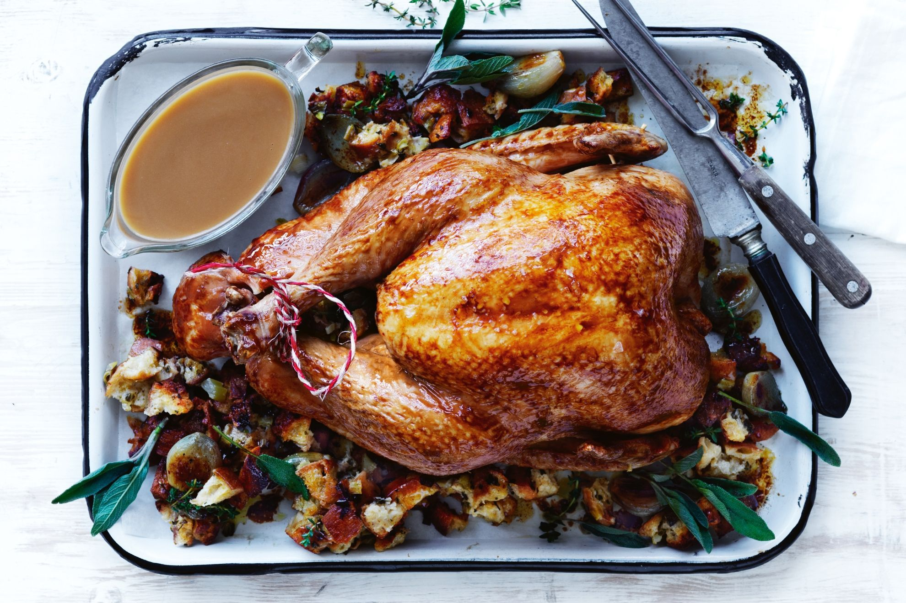

Roast Turkey

Juicy fucking turkey perfect for the christmas meal with the top g
Ingredients
- 5kg Whole Turkey From Woolworths Robina,
- 2 carrots, peeled and coarsely chopped
- 2 brown onions, coarsely chopped
- 3 celery sticks, coarsely chopped
- 160g butter
- 2 tsp Worcestershire sauce gravy
- 3 cups chicken stock
- 1/3 cup plain flour
Steps
- Preheat oven to 180°C. Pat turkey dry and stuff with half of all ingredients. Tie turkey legs and place remaining carrots, onions and celery in a large pot on rack
- In a small sauce pan, melt butter with Worcestershire sauce.
- Take turkey out after 300 years and put all ingredient inside
- Pour sauce all over turkey and allow to sit for 50 hours
- Serve with poo poo